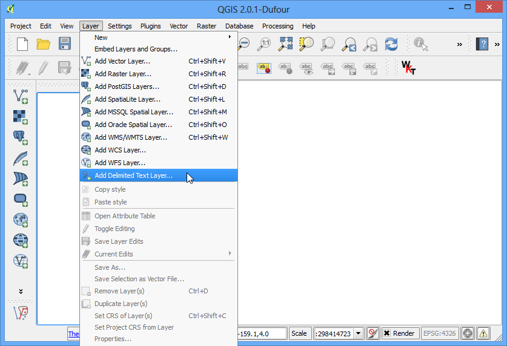
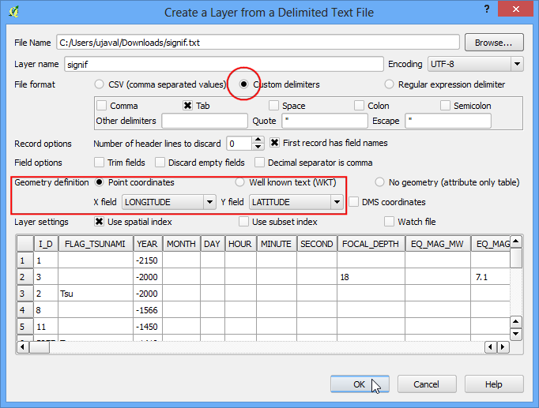

การนำเข้าข้อมูลจากไฟล์ สเปรดชีต หรือ CSV¶
ในหลายๆ ครั้ง ข้อมูล GIS จะอยู่ในรูปแบบตารางเช่นมาจาก สเปรดชีตของโปรแกรม Excel หากคุณต้องการลิสต์พิกัด เส้นรุ้ง/เส้นแวง คุณสามารถนำเข้าข้อมูลนี้มาใช้ในโปรแกรมได้เช่นกัน
ภาพรวมของงาน¶
เราจะนำเข้าข้อมูลแผ่นดินไหวจากไฟล์ข้อความเข้าสู่ QGIS
ข้อมูลที่ต้องใช้¶
NOAA’s National Geophysical Data Center มีชุดข้อมูลการเกิดแผ่นดินไหวละเอียดมาก ซึ่งมีข้อมูลตั้งแต่ช่วงยุด 2150 ปีก่อนคริสกาล - หามายังไงฟะ, ผู้แปล. Learn more.
ดาวน์โหลดข้อมูล Significant Earthquake Database
For convenience, you may directly download a copy of both the datasets from the links below:
แหล่งข้อมูล [NGDC]
ขั้นตอนการทำงาน¶
เรามาดูข้อมูลกันก่อน การที่จะเอาข้อมูลเข้ามายังตัว QGIS คุณจะต้องบันทึกเป็นไฟล์ข้อความ ซึ่งมีอย่างน้อย 2 คอลัมน์ ซึ่งมีข้อมูลพิกัด X และ Y ถ้าคุณใช้โปรแกรมประเภทตารางคำนวณ ให้ใช้ Save As เพื่อบันทึกเป็นไฟล์ Tab Delimited File หรือ Comma Separated Values (CSV) เมื่อคุณได้ข้อมูลมาแล้ว คุณสามารถใช้โปรแกรมแก้ไขข้อความอย่าง Notepad เพื่อดูข้อมูลข้างในได้ ในกรณีข้อมูล Significant Earthquake Database ที่ดาวน์โหลดมานั้น เป็นไฟล์ข้อความและมีข้อมูล ละติจูดและลองกิจูด มาให้แล้ว คุณจะสังเกตได้ว่าแต่ละฟิลด์ถูกแบ่งด้วย แท็บ

เปิด QGIS คลิกที่เลือกที่เมนู

ในหน้าต่าง Create a Layer from a Delimited Text File คลิกที่ปุ่ม Browse และเลือกไฟล์ที่ดาวน์โหลดมา ในส่วน File format เลือก Custom delimiters และติ๊กถูก Tab จากนั้น ในส่วน Geometry definition ถ้าข้อมูลเรามีพิกัด X และ Y ตัวโปรแกรมจะทำงานให้เราอัตโนมัติ ซึ่งในกรณีของเราคือ LONGITUDE และ LATITUDE แต่เราก็สามารถเปลี่ยนตรงนี้ได้ถ้าหากโปรแกรมเลือกให้เราผิด จากนั้นคลิกที่ปุ่ม OK
Note
ค่าพิกัด X และ Y สามารถทำให้ใครหลายคนสับสนได้โดยง่าย ค่า ละติจูด จะบ่งบอกถึง พิกัดตำแหน่งในแนวทางทิศ เหนือ-ใต้ ซึ่งก็คือเป็นแนวแกน Y เช่นเดียวกะ ลองกิจูด จะบ่งบอกถึง พิกัดตำแหน่งในแนวทางทิศ ตะวันออก-ตะวันตก ซึ่งก็คือเป็นแนวแกน X นั่นเอง

คุณจะเห็น error บ้างในหน้าต่างถัดไป ซึ่งเกิดจากการขาดข้อมูลพิกัด X และ Y ในบางข้อมูล ตรงนี้จะช่วยคุณไปแก้ไขข้อมูลในภายหลังได้ แต่ในที่นี้ยังไม่ต้องทำอะไรกับ error นี้

ถัดมา หน้าต่าง Coordinate Reference System Selector จะขึ้นมาให้เราเลือก coordinate reference system จากในข้อมูลการเกิดแผ่นดินไหวที่มาในรูปแบบละติจูดและลองกิจูด คุณควรเลือก WGS 84 จากนั้นคลิกที่ปุ่ม OK

ตอนนี้คุณจะเห็นข้อมูลที่คุณนำเข้ามา ปรากฏอยู่บนโปรแกรม QGIS แล้วเรียบร้อย